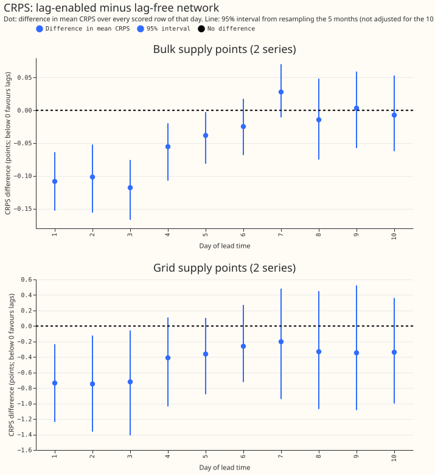
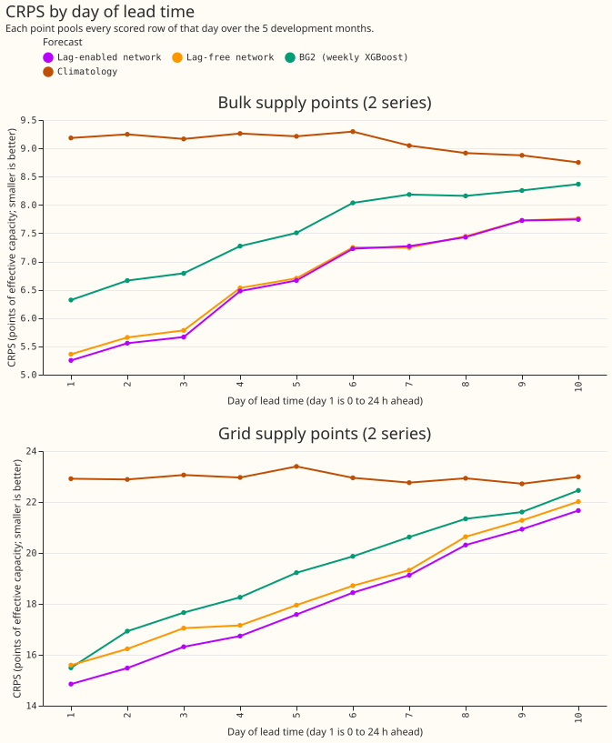
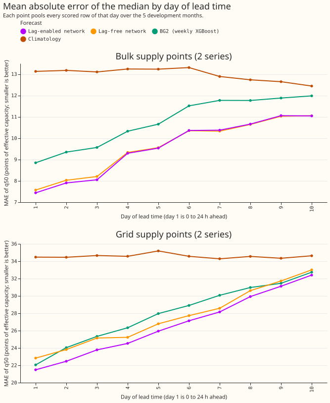
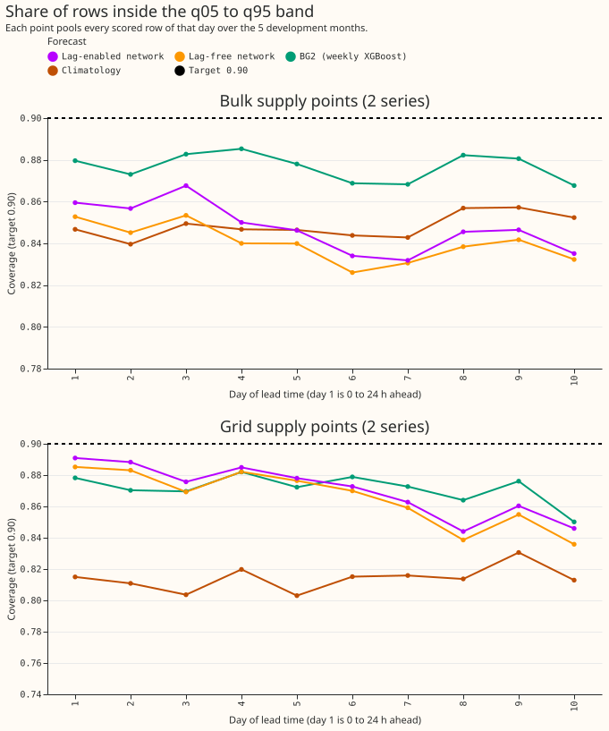
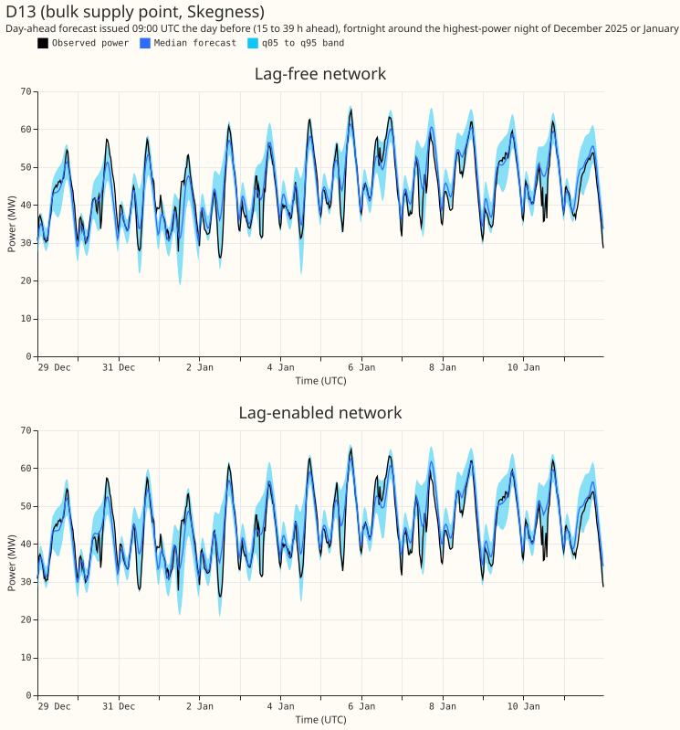
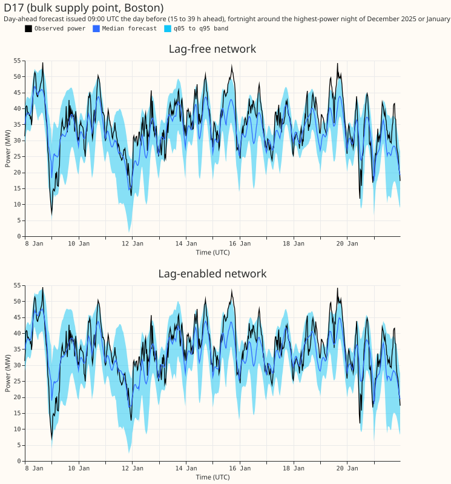
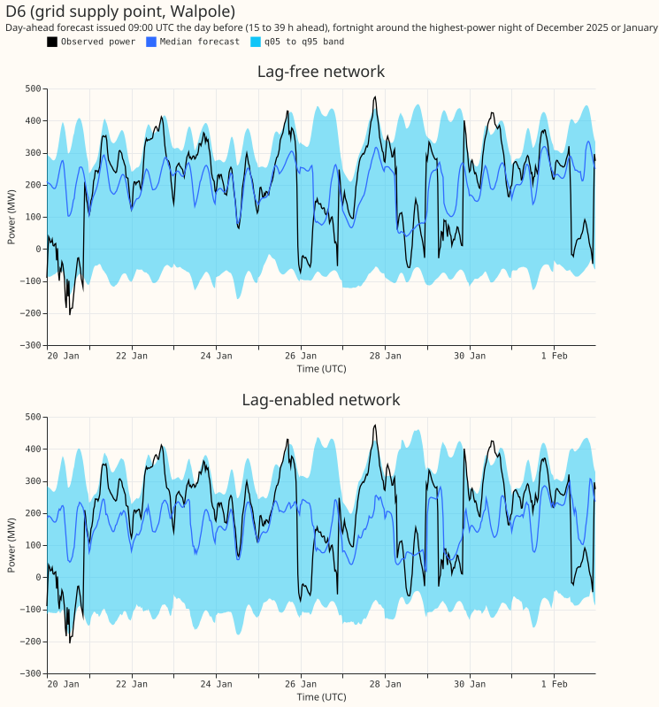
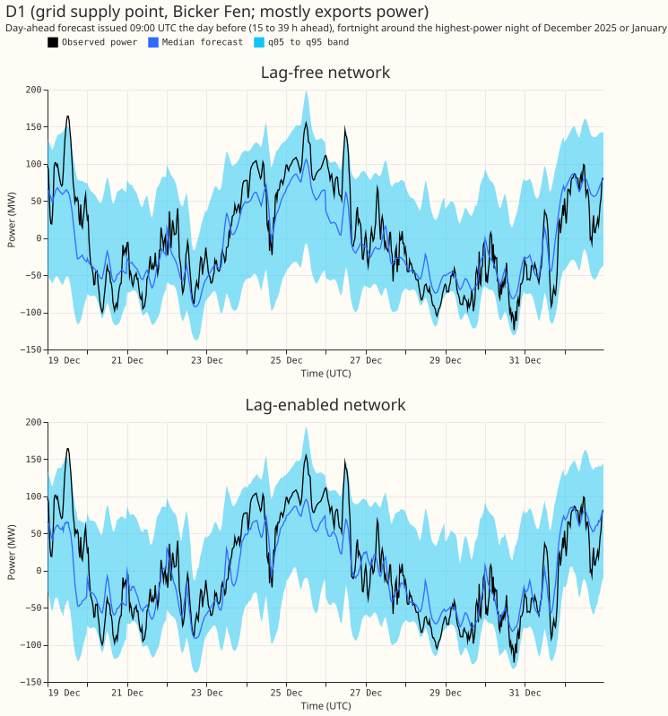
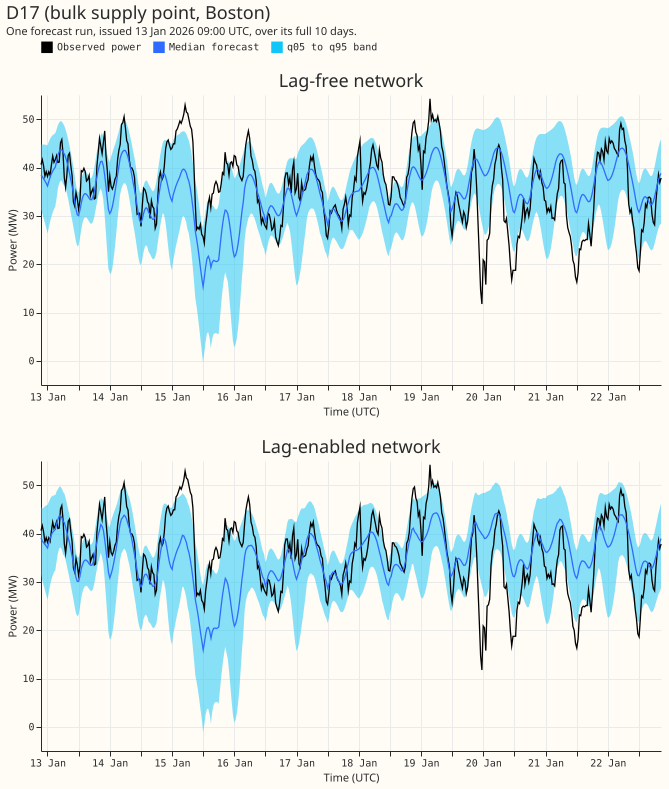
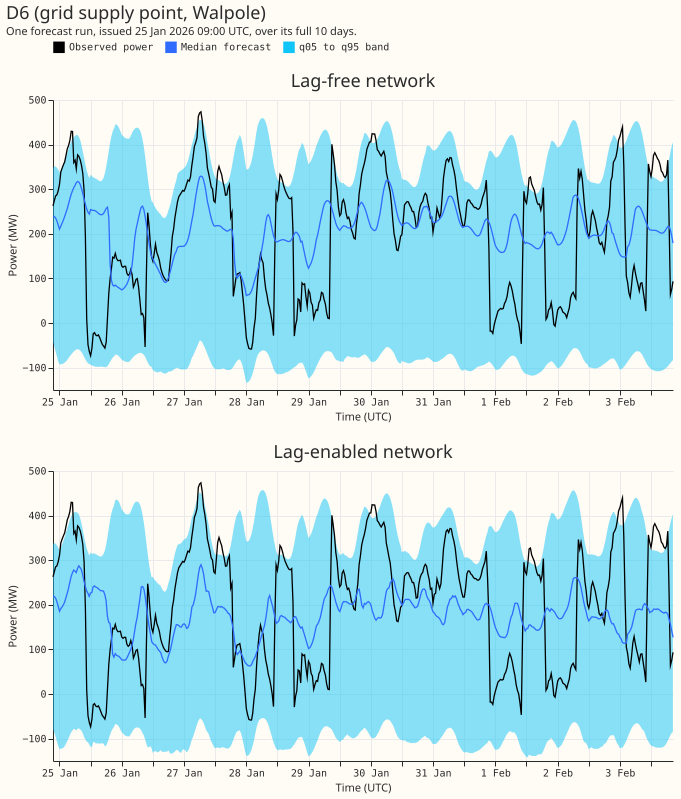

Does a lag-enabled demand network beat a lag-free network at days 1 to 3 at the 2 bulk supply points and the 2 grid supply points, when both use the D5 offset and the thermal-lag columns?
In these 2 bulk supply points (BSPs), 2 grid supply points (GSPs), and 5 development months, giving the demand network the previous day's and the previous week's power lowered its error at days 1 to 3 by 0.11 points of capacity at the BSPs, and by 0.73 points at the GSPs, when the two networks differ in nothing else. Error is the continuous ranked probability score (CRPS) in points of effective capacity (percent of the series' capacity; smaller is better). At the BSPs the gain passes the pre-registered bar: its interval excludes zero and it exceeds the minimum detectable effect (0.08). At the GSPs the interval only just excludes zero (-1.52 to -0.005) and the gain is below its minimum detectable effect (1.16), so the gain is not shown. From day 4 the BSP gain fades to zero, and the GSP gain is neither shown nor ruled out. The 90% band (q05 to q95) still holds the observed power on only 0.85 to 0.89 of rows at days 1 to 3.
Experiment 619 compared a lag-enabled network with experiment 611's lag-free network, which used a different offset and no thermal-lag columns. This experiment refits both arms with the D5 offset of experiment 565, the three-step schedule with a 3-day embargo of experiment 574 (arm P5), and the thermal-lag and solar-gain columns of experiment 569, on the same 5 development months (2025-10, 2025-12, 2026-01, 2026-03, 2026-06), the same 2 seeds, and the rows and scoring of experiment 611. Labels: D5 is the output offset of experiment 565; B1 is the thermal-lag and solar-gain columns; BG2 is the weekly-refitted XGBoost reference model; D13 and D17 are the 2 BSPs, D1 and D6 the 2 GSPs. The lag-free arm is the lag-enabled network with the day-lag and week-lag power values, missing flags, and ages replaced by their "absent" encoding in every row of pre-training, fine-tuning, and scoring. Load-shifts are ignored: no gate, no synthetic load-shifts, no neighbour inputs.
Figures

Figure 1. CRPS of the lag-enabled network minus the lag-free network, by day of lead time. Look at the dots: at the BSPs they rise from about -0.11 on day 1 to zero by day 6 to 7, and at the GSPs they stay below zero on all 10 days, with intervals that include zero from day 4. The intervals are not adjusted for the 10 days, so they are narrower than those of Table 2.

Figure 2. CRPS by day of lead time. Look at the purple and amber lines: the lag-enabled network is lowest on the first days. The two networks meet from day 6 at the BSPs, and stay 0.3 apart at day 10 at the GSPs.

Figure 3. Mean absolute error of the median forecast. Look at the GSPs: the lag-enabled network (purple) is lower on every day.

Figure 4. Share of rows inside the q05 to q95 band. The dashed black line is the target of 0.90. Look at the lines: every forecast sits below it on every day.

Figure 5. D13 (bulk supply point): forecast issued at 09:00 UTC the day before, for the 14 days from 28 December 2025 to 11 January 2026 (the fortnight around the night of highest observed power). Look at the winter peaks: both networks follow them, and compare the band width between the panels.

Figure 6. D17 (bulk supply point), 8 to 21 January 2026, chosen by the same rule. Look at the peaks and the band width in both panels.

Figure 7. D6 (grid supply point), 19 January to 2 February 2026, chosen by the same rule. Look at the band width: it spans several hundred MW.

Figure 8. D1 (grid supply point that mostly exports power), 19 to 31 December 2025, chosen by the same rule. Look at whether the median follows the observed power.

Figure 9. D17: one forecast run issued on 13 January 2026 at 09:00 UTC, over its full 10 days. Look at the band: it widens and narrows with the daily shape of the power, and the median misses some dips.

Figure 10. D6: one forecast run issued on 25 January 2026 at 09:00 UTC. Look at how the band widens with lead time.
Results
Table 1. Pooled scores on the common rows (228,968 per forecast) that all four networks, Design 1,
BG2, and the climatology have. The climatology, the manual heuristic, and some Design 1 and BG2
rows are in the private scores/by_set.csv. "Days 1 to 3" is a lead of 0 to 72 h and "days 4 to
10" is 72 to 240 h.
Coverage is the share of rows inside q05 to q95 (target 0.90). MAE is the mean absolute error of the
median. "B1" means the thermal-lag and solar-gain columns.
| Group | Lead | Forecast | CRPS | MAE | Coverage |
|---|---|---|---|---|---|
| BSPs | Days 1 to 3 | Lag-enabled, B1 | 5.49 | 7.80 | 0.861 |
| BSPs | Days 1 to 3 | Lag-free, B1 | 5.60 | 7.94 | 0.850 |
| BSPs | Days 1 to 3 | Lag-enabled, no B1 (619) | 5.50 | 7.83 | 0.865 |
| BSPs | Days 1 to 3 | Lag-free, no B1 | 5.68 | 8.05 | 0.849 |
| BSPs | Days 1 to 3 | Design 1 (611) | 5.62 | 8.00 | 0.847 |
| BSPs | Days 1 to 3 | BG2 | 6.59 | 9.26 | 0.878 |
| BSPs | Days 4 to 10 | Lag-enabled, B1 | 7.21 | 10.32 | 0.841 |
| BSPs | Days 4 to 10 | Lag-free, B1 | 7.23 | 10.32 | 0.836 |
| BSPs | Days 4 to 10 | Lag-enabled, no B1 (619) | 7.14 | 10.20 | 0.843 |
| BSPs | Days 4 to 10 | Lag-free, no B1 | 7.29 | 10.41 | 0.830 |
| GSPs | Days 1 to 3 | Lag-enabled, B1 | 15.55 | 22.58 | 0.885 |
| GSPs | Days 1 to 3 | Lag-free, B1 | 16.29 | 23.94 | 0.879 |
| GSPs | Days 1 to 3 | Lag-enabled, no B1 (619) | 15.48 | 22.29 | 0.878 |
| GSPs | Days 1 to 3 | Lag-free, no B1 | 16.32 | 24.11 | 0.878 |
| GSPs | Days 1 to 3 | Design 1 (611) | 16.80 | 24.31 | 0.872 |
| GSPs | Days 1 to 3 | BG2 | 16.70 | 23.81 | 0.873 |
| GSPs | Days 4 to 10 | Lag-enabled, B1 | 19.23 | 28.42 | 0.864 |
| GSPs | Days 4 to 10 | Lag-free, B1 | 19.56 | 29.06 | 0.860 |
| GSPs | Days 4 to 10 | Lag-enabled, no B1 (619) | 19.33 | 28.58 | 0.856 |
| GSPs | Days 4 to 10 | Lag-free, no B1 | 19.63 | 29.32 | 0.860 |
Table 2. Contrasts in CRPS (points; negative favours the first forecast). The primary family has 4
contrasts (Bonferroni count 4). The other rows belong to the family of 32 contrasts (8 pairs x 2
groups x 2 lead sets; Bonferroni count 32). Each interval resamples the 5 months at the Bonferroni
level. Each contrast uses the common rows of its group and lead set (34,986 per group at days 1 to
3, 79,498 at days 4 to 10, of 228,968 over both groups and lead sets). Contrasts against BG2 and
Design 1 are in the private scores/contrasts.csv.
| Contrast | Group | Lead | Difference | Interval | Minimum detectable effect |
|---|---|---|---|---|---|
| Lag-enabled minus lag-free, both B1 (primary) | BSPs | Days 1 to 3 | -0.109 | -0.168 to -0.060 | 0.083 |
| Lag-enabled minus lag-free, both B1 (primary) | BSPs | Days 4 to 10 | -0.017 | -0.069 to +0.022 | 0.072 |
| Lag-enabled minus lag-free, both B1 (primary) | GSPs | Days 1 to 3 | -0.734 | -1.517 to -0.005 | 1.159 |
| Lag-enabled minus lag-free, both B1 (primary) | GSPs | Days 4 to 10 | -0.320 | -1.074 to +0.411 | 1.190 |
| Lag-enabled minus lag-free, both without B1 | BSPs | Days 1 to 3 | -0.174 | -0.239 to -0.072 | 0.136 |
| Lag-enabled minus lag-free, both without B1 | GSPs | Days 1 to 3 | -0.832 | -1.444 to -0.120 | 1.133 |
| B1 minus no B1, lag-enabled | BSPs | Days 1 to 3 | -0.010 | -0.170 to +0.188 | 0.286 |
| B1 minus no B1, lag-enabled | GSPs | Days 1 to 3 | +0.062 | -0.442 to +0.852 | 1.053 |
| B1 minus no B1, lag-free | BSPs | Days 1 to 3 | -0.075 | -0.324 to +0.148 | 0.368 |
| B1 minus no B1, lag-free | GSPs | Days 1 to 3 | -0.036 | -0.221 to +0.366 | 0.525 |
Table 3. Tail calibration, each arm on its own scored rows (43,584 per group at days 1 to 3, so shares differ slightly from Table 1), at days 1 to 3: share of rows at or below each quantile (target equal to the level), for the two B1 arms.
| Group | Quantile | Lag-enabled | Lag-free |
|---|---|---|---|
| BSPs | q01 | 0.010 | 0.011 |
| BSPs | q05 | 0.049 | 0.051 |
| BSPs | q95 | 0.910 | 0.902 |
| BSPs | q99 | 0.961 | 0.956 |
| GSPs | q01 | 0.012 | 0.010 |
| GSPs | q05 | 0.055 | 0.055 |
| GSPs | q95 | 0.943 | 0.937 |
| GSPs | q99 | 0.987 | 0.987 |
The upper tail is the weak side at the BSPs: q95 holds 0.90 to 0.91 of rows (target 0.95) and q99
holds 0.96 (target 0.99). Pinball losses are in the private scores/tails.csv.
Pre-registered predictions
- Held at the BSPs, failed at the GSPs: the lag-enabled network beats the lag-free network at days 1 to 3 by at least the minimum detectable effect (-0.109 against 0.083 at the BSPs; -0.734 against 1.159 at the GSPs).
- Held: the two networks tie at days 4 to 10, meaning the interval includes zero (-0.069 to +0.022 and -1.074 to +0.411).
Checks
- Code review: a fresh Sonnet reviewer read the fit code before the first fit and found no leakage. Finding on the lag grid indices: see Caveats.
- Lag-free arm check: the fit logs show every row's day-lag and week-lag as missing
(
share_day_lag_missing1.0) in the lag-free arms and about 0.3 in the lag-enabled arms (the block dropout of experiment 558). - Thermal-lag tables: built for the 4 series from the ensemble-mean summaries of experiment 415; experiment 437's causality check (a column never depends on a later run) gave a largest difference of 0 on D13.
- Mean forecast against median forecast: not computed, because the stored forecasts are quantiles only.
- July 2026: never read.
Caveats
- Five months and two series per group. Each interval resamples 5 months. The GSP contrasts cannot rank any forecast.
- The lag-free arm still receives weather at lag times. Masking replaces the power values, the missing flags, and the ages, but the lag encoder still reads the expected weather and calendar row at the lag times. Both arms receive that input, so the contrast isolates the power lags. The lag-free arm is therefore "power-lag-free", not input-free.
- Labels: D5 is the output offset of experiment 565; B1 is the thermal-lag and solar-gain columns; BG2 is the weekly-refitted XGBoost reference model; D13 and D17 are the 2 BSPs, D1 and D6 the 2 GSPs. The lag-free arm is the lag-enabled network with masked lags, not experiment 611's Design 1. The lag-free arm's parameters include an unused lag encoder. Design 1 is in Table 1 as a reference.
- Thermal-lag columns for the 4 series are built from ensemble-mean summaries at each series' location and from CAMS irradiance, as for the Primaries. The Primaries' stored tables were not used.
- Lag-time weather is the expected-weather embedding from the run issued at or before each lag time, so it is available at forecast time. Lags are at least 24 h old.
- Load-shifts at the BSPs and GSPs are ignored, so lag rows hold unlabelled events. NGED's event labels are also incomplete.
- Lead range is 0 to 240 h, against NGED's horizon of 1 to 10 days. A lead of exactly 240 h is dropped.
- Schedule: coarse refits on day 0 and day 14 of each test month, as in experiment 619.
- Not scored: curtailment cost.
Reproduction
run_all.sh builds the thermal-lag tables, then runs pre-training, step 2, the fits, and the
assembly for the three new arms and both groups (about 40 minutes on one GPU process under 8 GB).
e00622_score.py, e00622_tails.py, and e00622_figures.py write the scores, the tails, and the
figures. Forecasts are in the private Parquet export
export/{lagged_b1,lagfree_b1}_<month>.parquet, in the layout of experiment 611's export (columns
time_series_id, power_fcst_init_time, valid_time, lead_hours, q01 to q99, observed_power,
unit), with substations.csv. Fitted weights are under
work/<group>/models/{J_LG_B1,J_LF_B1,J_LF_NB}
in the experiment's data folder. The lag-enabled arm without B1 is experiment 619's stored forecast.